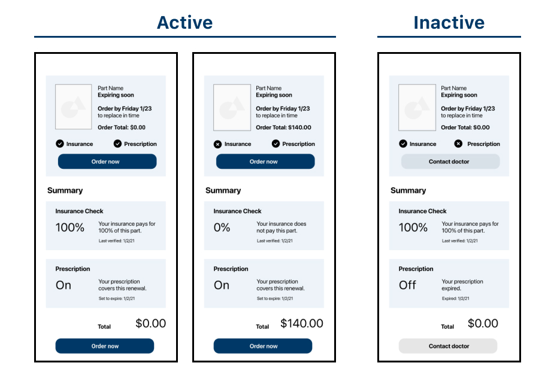

ResBud
Role
Product designer
Collaborators
Linda Xue,
Jongyeon Chae
Timeline
January 2022
Challenge
In this project, our team was challenged to create a native mobile app which provides a service to customers of ResMed, a medical device company. ResMed primarily serves patients with sleep apnea and other related respiratory conditions. Patients who require CPAP machines are left on their own to track the varying lifecycles of the machine parts, and replace them in a timely fashion. This responsibility raises many issues for customers and often prevents them from using their machines consistently, getting the sleep they need, and getting the most out of treatment. Our app aimed to address this issue and help users take regular care of their CPAP machines.
Solution
We created a mobile device management app which allows users to easily monitor the status of their machine parts at home and automates the process of purchasing and replacing expired parts. This service relieves the user of the responsibility of managing their medical device, and allows them to maintain consistent treatment without the stress of device maintenance. Not only does this solution increase customer satisfaction and loyalty, but it benefits other company stakeholders as well. With our app, ResMed store managers can gain a better sense of demand for machine parts and spend less time manually managing replacement orders. ResMed manuafacturers will also benefit from the data our service collects which can be used for quality assurance purposes.
Stakeholder map
To discover how we could provide new value to ResMed through a mobile service, we conducted research about the current state of the company. We created a stakeholder map to explore and understand the relationships between ResMed's different stakeholder groups. As a healthcare company, ResMed has many external collaborators beyond company employees—such as physicians and health insurance providers—that have a direct effect on the experience of patients. In our map we explored the complex relationships between the many stakeholders of ResMed. Through this process, we identified three main stakeholders: patients, manufacturers, and store managers.
ResMed stakeholder map.
Initial wireframes
After conducting initial research to learn more about ResMed's stakeholders, we began creating low fidelity wireframes of what our mobile service might look like. We decided to create an app that tracks CPAP machine part statuses and automates the process of replacing parts as they expire. In this prototype we explored the needs of CPAP machine users and how our service could improve ResMed's customer experience. These wireframes included a home page with a summary of the user's devices and individual machine parts along with their statuses. We prototyped a flow for a product expiration trigger in which the user would be prompted to order their replacement. We also prototyped an in-app purchase flow to ease the process of purchasing additional ResMed products. Finally, we included a prescription expiration trigger for users to request a prescription renewal from their physician and insurance provider in-app.
Initial wireframes of our mobile service.
In class, we received a lot of great insight during critique to iterate our design for the next deliverable:
- We needed to work on distinguishing our design from the ResMed device store.
- Our service should leverage data collection in some way to provide a better experience to the customer.
- We needed to consider how our service could benefit all of our identified stakeholders, not just customers.
We took this feedback into consideration when creating our next iteration of prototypes.
Iterations
After receiving feedback during critique, we decided to redefine the goal of our service to innovate the way both individual customers and company side stakeholders manage the CPAP machine.
For customers, we wanted to reduce the risk of irregularities and detect any issues with devices early. We decided to utilize the audio sensor in the mobile device to detect the condition of the CPAP machine by monitoring for irregular sounds. This allows the app to inform the users proactively whenever the risk of malfunction rises and guide them to take action to prevent it.
We also wanted to innovate the troubleshooting process for users. We decided to utilize the mobile device's camera to implement image detection to look for any issues with the machine. This allows the app to detect any concerning changes in machine parts, and prompt the user to replace the part without them having to visit a ResMed store or speak with customer service.
Device troubleshooting screens.
Product expiration trigger screens.
Final solution
For the final iteration of our prototype, our group continued to improve our design with the goal of finalizing our user flow, deepening the service's relationships with its stakeholders, and expanding the value of the data collected to the organization moving forward.
We added more design details and tried to strengthen the microinteractions of the app by adding back and edit buttons, enlarged images on select, and icons to indicate the system state to improve our feedback. We also focused more on the automation of our part replacement process so that we could provide users with a more service-oriented experience.
Further, we decided to emphasize the use of quantitative data to address the interests of our multiple stakeholders. As a result, we added detailed metrics in the "device" tab to help users track the status of each individual device part and take better regular care of them. This feature also allows manufacturers to collect more data about the usability of their product and provide them more insights into future opportunities for improvements.
Final solution prototype.
Video demo of user flow.
Conclusion
I really enjoyed the challenge this project brought of delivering value to all of ResMed's different stakeholders. When designing our app we worked to consider the benefits our service could provide not only to end-users but also ResMed store managers, device manufacturers, and overall management. This allowed us to create a service which leveraged data collection and smart sensor technology to improve ResMed's customer experience and general business operations. This project forced us as designers to not only consider the needs and goals of users but also those of other company stakeholders, which ultimately led us to create a service that provides cascading benefits for the company. Having evidence of stakeholder benefits also would make pitching to a company to get buy-in much simpler. This project showed me the extreme importance of stakeholder alignment in design, and how to leverage already existing company data to achieve that.